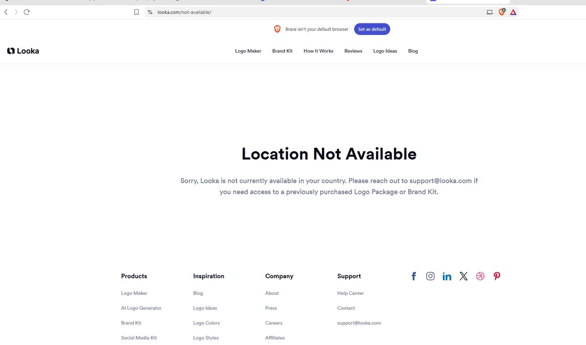

AI Tools & Naming
AI Business Name Generator vs Human: I Tested Namelix and ChatGPT
I named the same made-up finance startup three ways: from my own head, with ChatGPT and with Namelix. Here are the names I got, the ones I liked, and where the tools let me down.
Short answer: AI gave me more names, faster, than I could come up with alone. But neither ChatGPT nor Namelix handed me a name I'd use as it was. I'd use them to get ideas, then pick and check the names myself.
Naming something from a blank page is harder than it sounds. You want a name that's easy to say, easy to remember and not already taken. After a few minutes, every idea starts to sound the same.
So I ran a small test. I made up one startup and named it three ways: on my own, with ChatGPT, and with Namelix. I also planned to try Looka, but the site wouldn't let me in from my country.
This wasn't a scientific comparison. I wanted to see what each method produced and whether AI could suggest names I wouldn't have thought of.
The startup I made up
The idea is an AI-powered personal finance app for young professionals. It tracks expenses, builds budgets and helps people save.
I wanted the brand to feel trustworthy, modern, simple and friendly. The name had to be short, easy to say and workable as a .com. I also didn't want a plain description like "AI Finance Tracker" or "Personal Budget App". The name shouldn't lock the business into one feature.
1. Naming it on my own
I set a timer for 10 minutes. No Google, no ChatGPT. I came up with seven names:
- Personafin
- Selfapp
- Selffin
- Cashpower
- Selfcash
- Youngfin
- Lovefin
My favorites were Selfapp and Personafin.
Reading the list back, I could see I kept gluing the same words together: self, fin, cash. Few of them sounded like real brands. Seven names was a thin baseline, but it gave me something to compare the tools against.
2. Asking ChatGPT for 20 names
Next I asked ChatGPT for 20 names. I didn't just ask for "cool names". I gave it the business, the audience, the brand personality and a few rules.
The prompt I used
I'm naming a startup: an AI-powered personal finance app for young professionals.
The app helps users track expenses, create budgets, and save money.
Brand personality: trustworthy, modern, simple, and approachable.
Please suggest 20 brand names. Prefer short, memorable, easy-to-pronounce names that could work as a brand. Avoid overly generic names and obvious combinations of words like "AI Finance."
For each name, briefly explain why it works. Don't claim domain availability or trademark availability.
What it gave me
ChatGPT returned 20 names, each with a short explanation. Here are 12 of them:
| Name | Its explanation, in short |
|---|---|
| Finora | Polished and flexible |
| Pocketa | Friendly, with a money-in-your-pocket feel |
| Mintly | Fresh, and linked to healthy finances |
| Savora | Hints at saving but still sounds like a brand |
| Moniva | Soft, approachable sound |
| Tallyo | Suggests tracking and counting |
| Folio | Clean and professional |
| Monevo | Suggests financial progress |
| Nestly | Warm, with a saving-and-security feel |
| Plenna | Suggests abundance without saying it outright |
| Oryn | Short and abstract |
| Cashora | Hints at money but stands alone as a brand |
The other eight were Nestegg, Pennywise, Centsy, Budgit, Vesta, Spendora, Coinly and Wealthie.

Which ones I liked
Moniva and Plenna were my favorites. They sounded like brands, not like descriptions of a finance app. Cashora also stuck with me, mostly because it's close to something I might have come up with myself.
About ten of the 20 felt generic or too much alike. Many leaned on the same money-word patterns. The explanations were helpful, but I still had to judge every name myself. ChatGPT gave me ideas quickly. It didn't give me 20 names I wanted to use.
If invented, abstract names appeal to you, I also wrote about why "meaningless" brand names built billion-dollar companies.
3. Trying Namelix
Namelix is built for one job: generating business names. I wanted to know if a dedicated tool would do better than a general chatbot.

The first batch
The first batch gave me around 30 names, and I shortlisted five. The ones I remember best are Think Money Lab, In Pocket AI and Paybit.
Names visible in my screenshot include johnnyfinance, kash8, MoneyboxAI, MoneyBoxers, FinciMind, MoneyMindz, Moneyfy, MoneyPurify, FinSmart, Budgetwise, Fundsmith, SpendWise AI, ToposFunds, FinFixer and Yieldologic. Namelix also groups results by theme, with tabs such as Latin Financial Terms, Historical Coin Names and Silicon Valley Pioneers.
Each name comes in its own font, color and logo-style layout, which makes the page fun to scroll. It also tricked me a little. A name looked better in a nice font than it did when I read it as plain text.
The second batch
I generated a second batch and got more of the same. I found a few more names, but the patterns felt familiar. More names didn't mean better names.
A few names also had spelling or pronunciation problems. A name that looks clever on screen can still be a headache if people can't say it or spell it.
| What I liked | What I didn't |
|---|---|
| Lots of ideas quickly | Some names felt alike |
| Fun to browse | More results weren't always better results |
| Showed me different naming directions | Some names were hard to spell or say |
| Easy to scan | I still had to judge originality myself |
Namelix gave me more options than I'd have found in ten minutes alone. I just didn't find the second batch much better than the first.
4. Looka: the test I couldn't run
Looka was meant to be my third tool. When I opened the site, I got a "Location Not Available" page saying Looka isn't offered in my country.

I'm not going to guess based on other people's reviews. So Looka is out of this comparison, and what you're reading covers ChatGPT and Namelix only.
AI vs human naming: how the results compared
| Method | Names | How it went |
|---|---|---|
| My own brainstorming | 7 | Harder than I expected, and the ideas got repetitive |
| ChatGPT | 20 | Fast and useful, but about half felt generic |
| Namelix | About 30 | Plenty of options, with some repeats and hard-to-say names |
| Looka | None | Not available in my country |
I didn't set up a scoring system before I started, so I won't pretend the results are precise. Counting names was easy. Judging creativity and brand potential was a matter of taste.
The names that made my shortlist
| Source | Names I liked |
|---|---|
| My own list | Selfapp, Personafin |
| ChatGPT | Moniva, Plenna, Cashora |
| Namelix | Think Money Lab, In Pocket AI, Paybit |
These are not final picks. I haven't checked domains, competitors or trademarks for any of them. A name can sound great in a brainstorm and still be a bad choice for a real business. My guide on how to check if a domain is trademarked before you buy shows the free check I'd run first.
So, can AI name a startup better than a human?
Not better, in my test. Faster, yes. I got stuck in the same word combinations, while ChatGPT and Namelix pushed me in other directions. But I still had to decide which names were memorable, easy to say and worth a closer look.
If I were naming a real startup, I'd do it in this order:
- Write a few ideas on my own first.
- Ask ChatGPT for other directions.
- Run Namelix for a bigger pool.
- Keep only the names I truly like.
- Check businesses, domains and trademarks before choosing.
Distinct names help, but they still need to be clear and easy to remember. I made a similar point in my CircleID piece on what makes a domain brandable as AI answer engines change discovery. For a more structured process, see my list of the best books on naming a business.
Quick answers
Can AI name a startup?
Yes. ChatGPT and dedicated tools like Namelix can suggest names from a short description of your business. But the suggestions are only a starting point. You still have to judge them and check them for existing businesses, domains and trademarks.
Is an AI business name generator better than a human?
Not in my test. The tools gave me more names, faster. My own list was shorter and more personal. None of the three methods gave me a name I would use without more checking.
Can I make a business name with AI for free?
Some tools have free options or limited free use, but access and limits change. Check each tool's current terms before you rely on it.
Is Namelix worth trying?
I think so, as an idea generator. It gave me about 30 names in the first batch and was easy to browse. But the second batch felt a lot like the first, and some names were hard to spell or say.
Should I use an AI-generated name for my business?
Treat it like any other name idea. Check for businesses already using it, see whether the domain is available, and search trademark databases before you commit.
Did I test Looka?
No. Looka showed a "Location Not Available" message in my country, so I couldn't run the test and I don't review it here.
Found a name you like? Check it before you commit.
I run a trademark and history check on one domain and send you a short written report. The Domain Risk Check Report is $39 and arrives within 3 business days of payment.
Want a quick read on a domain name?
Score it free in a minute, or order a written report for $39.
Get new domain insights by email
One short email when a new article or case study goes up. No spam, and you can unsubscribe at any time.